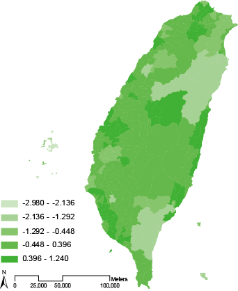

Trends of Dependency Ratio of Taiwan(2008-2011)
Aging Index = population (over 65) / population (under 15)
Young Dependency Ratio = population (under 15) / population (15 - 64)
Old Dependency Ratio = population (over65) / population (15 - 64)
Dependency Ratio = population (over65) + population (under 15) / population (15 - 64)
Changes in Aging Index of Taiwan ( 2008-2011 )
Most of towns in Taiwan have increments in Aging Index from 2008 to 2011 , but there are some eastern towns have declines in Aging Index.
Changes in Young Dependency Ratio of Taiwan ( 2008-2011 )
Due to the decline in birth rate, the changes in Young Dependency Ratio had all been reduced . However , this does not mean that the pressures of parents in Taiwan had also been reduced , actually , bad economical condition is one of the reason that made the birth rate decline.
Changes in Old Dependency Ratio of Taiwan ( 2008-2011 )
Generally speaking, towns in western Taiwan have greater positive changes against towns in eastern Taiwan. LiouChou in PingTung has the largest change ( + 1.24 % ) ,which means either the nubmer of the elderly there has been increasing or the number of people aged 15 - 64 has been declining.
Changes in Dependency Ratio of Taiwan ( 2008-2011 )
DaHu, MiouLi has dropped the most dependency ratio(5.86%) from 2008 to 2011. And DaAn , Taichung has the least change in dependency ratio throuth those years.